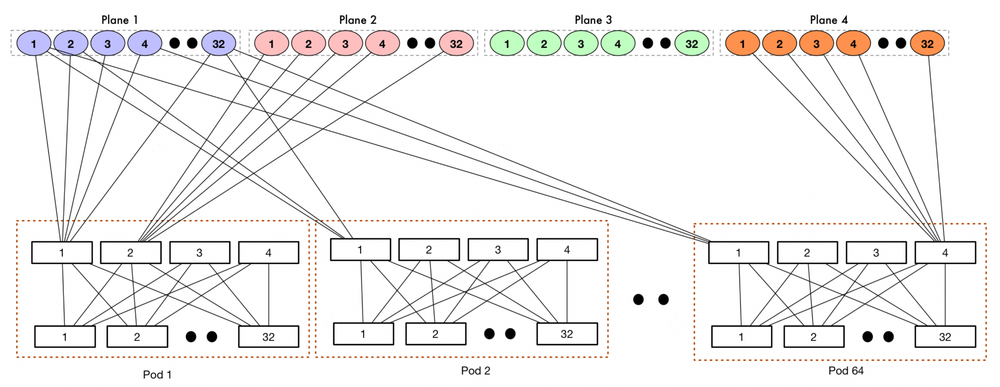
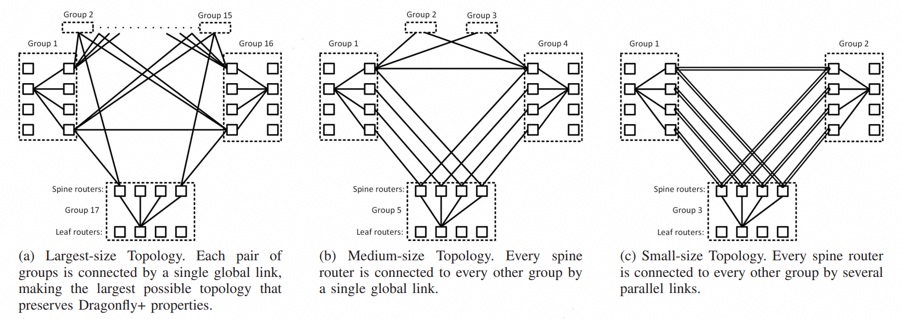
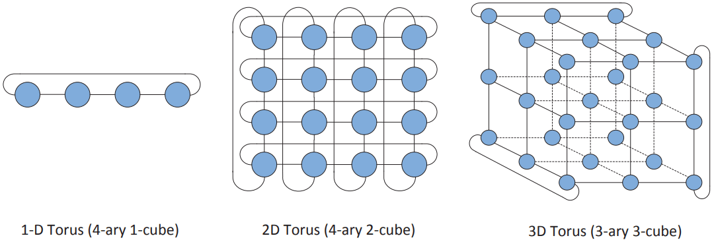

先进互联拓扑演进 ¶
引言 ¶
超节点作为 AI 集群的核心组成部分，已成为大模型训练、推理的基石，其内部互连拓扑直接决定通信时延、带宽效率、可扩展性与部署成本。本节梳理了互连拓扑的关键设计问题，以多层交换网络到低直径直连网络的演进思路展开，依次阐述 CLOS 拓扑、Dragonfly 拓扑、3D-Torus 拓扑及 Slimfly 等新兴直连拓扑的核心性质与适用场景，为超节点的互连拓扑设计提供参考。
拓扑设计的关键问题 ¶
Radix 受限下的拓扑规模问题 ¶
互连拓扑本质上是带约束的图构建问题：设互连拓扑为图 \( G = (V, E) \)，\( V \) 为节点集合（含交换机、服务器
该理论上界由端口数与网络直径两个指标双重约束。若想打破该上界约束扩大规模，有两个方向：
- 方向一：引入多层交换网络，增加网络成本，典型结构是 CLOS、Dragonfly 拓扑。
- 方向二：通过增加节点端口数构建低直径直连拓扑，降低跳数与时延，同时通过降低的网络成本用于提高算力密度提升性能，典型结构是 Torus、Slimfly 等拓扑。
带宽、成本与时延之间的权衡 ¶
AI 大模型的高带宽需求推动了 Clos/ 胖树架构的应用，通过增加额外的交换端口实现互连转发，从而避免端侧转发导致的带宽损失。但此类结构由于增加了网络层级，成本、跳数与时延往往高于低直径直连网络，在时延敏感的小包通信中效果不佳。同时规模增长会受限于大 Radix 交换机的先进芯片制程约束。
低直径直连拓扑设计则通过减少数据流经过的交换设备级数，在降低延迟与功耗的同时维持高带宽，从而提升每比特传输的性价比。但另一方面，这类设计对路由选择策略与流量疏导需通过精细化设计以平衡性能与稳健性。
混合静态与动态交换架构（OCS）¶
光交换（OCS）技术引入动态可变的 " 动态边 " 后，可简化部署，提高拓扑的灵活性。互连拓扑不再是单一静态图，而是由静态子图与可动态调整子图组成的拓扑序列。此时网络设计转化为联合优化问题：
- 设计稳定的基础静态拓扑，满足最坏场景下的流量承载与故障容错需求；
- 优化可重构链路分配策略，匹配任务变化时的流量需求。
拓扑演进理念：从多层交换网络到低直径直连网络 ¶
超节点网络拓扑的演进围绕 " 降直径、减跳数、降成本、提能效、适配大规模 " 展开：
阶段一：分层交换网络
- CLOS（Fat-Tree）：以分层多级交换实现无阻塞转发，稳定易部署，但规模扩大后层级增多、链路与交换机成本激增、时延提升；
- Dragonfly：采用 " 组内全互联 + 组间稀疏互联 "，去除顶层交换，降低直径与跳数，在有限端口下兼顾规模与成本，可作为超节点从多层交换转向低直径直连的中间形态；
阶段二：低直径直连网络
- Torus：去除了所有的交换设备，达到极致的性价比，是低直径直连拓扑的典型代表，通过多维环面直连，邻居高效通信、硬件层数降低，大幅降低成本与能效，同时支持超大规模组网，适合规则密集通信；
- SlimFly：基于最优直径图理论，将直连拓扑的直径固定到了 2 跳，在同等端口数下实现理论最优时延、更低功耗与布线成本，流量适应性更强，可作为低直径直连拓扑下一代的设计参考。
典型拓扑介绍 ¶
拓扑核心评价指标 ¶
性能：
- 直径（Diameter）：\( D(G) = \displaystyle\max_{u, v \in V} d(u, v) \) 界定最坏情况下的跳数时延上限；
- 平均最短路径长度（ASPL）：\( \sum_{u,v} d(u,v) / N(N-1) \) 反映网络延迟的整体水平；
- 二分带宽（Bisection Bandwidth）：将节点集 \( V \) 划分为两个等规模子集所需的最小边割集规模，表征均匀流量模式下的最坏吞吐量；
成本：
- 网络成本：在 \( \Delta(G) \) 与 \( D(G) \) 约束下，网络部署形态与规模直接决定成本；
可靠性：
- 边连通性、顶点连通性（Edge/Vertex Connectivity）：分别表示网络保持连通状态可容忍的最大链路、节点故障数；
- 路径多样性（Path Diversity）：每对节点间（最短或不相交）路径的数量，是多路径传输与负载均衡的基础。
CLOS 拓扑 ¶
结构原理 ¶
CLOS 拓扑由 Charles Clos 提出，是多级分组交换网络，由交换机构建的多级交换结构，其典型实现形式为胖树（k 端口交换机构建的 k 叉胖树
- 底层 Leaf 层：直接连接计算节点（GPU/ 服务器
） ，负责端侧接入； - 中层 Spine 层：实现 Leaf 交换机间的无阻塞互联，负责流量转发；
- 大规模场景扩展为三层：Leaf→Spine→Core，通过增加核心层进一步扩大网络规模。
CLOS 的核心特性是链路上行带宽无收敛，每层链路带宽不小于下层总和，实现严格无阻塞通信，依托 ECMP 等路由技术实现多路径负载均衡。

图 1: CLOS（胖树）拓扑结构示意图
核心指标 ¶
CLOS 架构是高带宽的代表，是允许增加网络成本情况下带宽敏感型流量的首选，通过引入交换设备让 xPU 间通信无带宽损失。设交换机端口数为 \( k \)，网络层数为 \( L \)，以标准无收敛组网计算，CLOS 的拓扑规模 \( N = k^L \)。通过增加网络层级或增加交换机端口数可扩大组网规模。
性能优：
- 时延次优：Clos 架构引入额外的交换设备带来时延增大，但总体网络直径较小且基本恒定（单层拓扑为 2 跳：xPU→Leaf→xPU
） ，跳数随层数增大而线性增长； - 带宽使用灵活：二分带宽恒定，相同网络层次下路径长度相同，任意节点集切分下割级链路数与节点数正相关，适应 P2P、All-to-All、AllReduce 等流量；
成本高：
- 网络成本高：小规模构建时表现优异，但向超大规模扩展时，网络层次增大，交换机与模块数量显著增加，网络 Capex 上涨；
- 网络功耗高：额外的交换设备引入额外的功耗，网络 Opex 上涨；
可靠性强：
- 容错性好：路径多样性丰富，具备高容错能力，多链路 / 交换机故障可通过 ECMP 机制恢复，但节点故障（如交换机故障）会导致网络容量显著下降；
- 路由复杂度低：ECMP 在等成本路径上的实现简单，但流量不均衡场景下需拥塞感知等复杂负载均衡机制；
Dragonfly+ 拓扑 ¶
结构原理 ¶
Dragonfly+ 是一类分组直连网络，将网络划分为多个电交换组，组内采用 CLOS 结构设计，组间全局链路直连。去除了纯 CLOS 结构的顶层大端口交换机，可通过小端口交换机 + 顶层直连构建大规模组网。典型拓扑应用是谷歌的 Jupiter 架构，其核心设计目标是在保持少跳数特性、提供高全局带宽的同时，实现性能与成本的优化平衡：

图 2: Dragonfly+ 拓扑结构示意图
- 组内：由交换机组成 CLOS 互连组，组内电交换转发，高带宽；
- 组间：不同组间通过全局链路全互联，任意两组间仅 1 跳，低时延；
- 端到端通信最大跳数为 3 跳（组内→组间→组内
） ，平衡了直径、成本与时延。
其设计核心是组内电互联、组间光互联，充分利用了电链路降低成本与电交换机汇聚提高灵活性，组间高带宽直连实现低时延、大规模扩展。结合 OCS 可在多任务场景下提高带宽利用率，降低路由复杂性。
核心指标 ¶
Dragonfly+ 拓扑是性能与成本的折中，混合电交换与直连拓扑，实现超大规模的低时延互连。设 xPU 端口数为 \( p \)，交换机端口数为 \( k \)，组内网络层数为 \( L \)。以标准无收敛组网计算，则组内节点规模为 \( k^L \)，组间端口数为 \( p \)。Dragonfly+ 组网规模 \( N = k^L \times p \)。通过增大网络层级、交换机端口数、xPU 端口数均可扩大规模。
性能优：
- 时延低且稳定：相比 CLOS 减小一跳时延；
- 带宽使用灵活性较好：适合 AllReduce 与 All-to-All 等流量；
成本中：
- 网络成本中：减少一层网络设备与模块，网络成本优于 CLOS，劣于 Torus；
- 网络功耗中：减少一层交换设备与模块引入的功耗，相比 CLOS 网络功耗降低 25%~50%；
可靠性强：
- 容错性好：Mesh 拓扑路径多样性丰富，抗故障能力强，具备高容错能力；
- 路由复杂度中：需交换机侧支持高速流量转发与 1~2 跳路由控制提升通信带宽；
3D-Torus 拓扑 ¶
结构原理 ¶
Torus 拓扑以二维或三维环面互连为典型形态。3D-Torus 是三维环面拓扑，将计算节点按 X、Y、Z 三维立方体排列，每个节点与相邻 6 个节点直连，立方体边界节点通过环绕链路形成闭合环，实现三维对称无中心结构。以环绕式链路，形成低直径、高度对称的结构，具备模块化扩展优势，是常见的基准拓扑与实用架构。谷歌 TPU 通过 3D-Torus 结合 OCS 提高了资源灵活性与利用率。

图 3: 3D-Torus 拓扑结构示意图
核心指标 ¶
Torus 架构是低成本的代表，不增加额外交换设备成本即可实现超大规模的互连，缺点是随规模增大网络直径显著上升。理论上 Torus 拓扑组网规模在不限制网络直径约束下可无限扩展。但实际应用中采用 64 Cube 电缆互连的基本单元结合 OCS 提高算卡利用率，此时组网规模受限于 OCS 端口数量，设 OCS 的端口数为 \( R \)，3D-Torus 的拓扑规模 \( N = 64 \times R \)。通过增大 OCS 端口数或增大基础 Cube 规模可扩大组网规模。
性能优：
- 相邻节点免交换时延低：n 维立方体节点规模网络直径较小，临近点通信时延小于 CLOS。提高 nD-Torus 的维度数可增加相邻节点数量，进一步降低时延；
- 适合特定流量：流量转发占用端侧带宽，天然适合 AllReduce 逐跳落盘流量；P2P 流量需模型部署优化到相邻节点；All-to-All 与随跳数增大带宽利用率有一定损失；
- 谷歌通过降低网络成本，转为算力密度与系统性能提升，达到与 CLOS 架构相似甚至更优的性能；
成本低：
- 网络成本小：完全无网络设备或仅使用 OCS 增加拓扑灵活性，网络成本占比远小于 CLOS；
- 网络功耗小：无额外交换设备引入的功耗，网络功耗近乎为 0；
可靠性强：
- 容错性好：路径多样性丰富，抗故障能力强，具备高容错能力；
- 路由复杂度高：需非标准软硬件支持，端侧高速流量转发与路由控制提升通信带宽；
Slimfly 拓扑 ¶
针对 Torus 流量随跳数增大会导致时延增大的问题，在拓扑设计中催生出了 Slimfly 等拓扑结构。Slimfly 是一种非常逼近 Moore Bound 的直连拓扑结构，即在给定节点度数和最大直径的条件下，可以连接到 Moore 上界的组网规模。典型配置中，Slimfly 的目标是任意节点间实现直径≈2，同时保持相对较少的链路数量。

图 4: Slimfly 拓扑结构示意图
从结构上看，Slimfly 能够提供较短的路径和良好的扩展性，因此在以最小化跳数（时延）为主要目标时，这种拓扑结构具备较高的收益，可作为低直径直连拓扑下一代的设计参考。
对参考设计的影响 ¶
拓扑演进会直接改变第四章中不同参考设计的相对位置：
- 标准以太 / 标准总线构型：当交换芯片 radix、无损以太能力和板级互联能力继续提升时，传统分层交换与总线型方案仍会保持强工程可行性。
- Dragonfly + OCS：如果“组内电交换、组间光交换”的折中持续成立，它会成为从标准构型迈向更大规模 HBD 的重要中间态。
- Torus + OCS：其吸引力取决于低直径直连拓扑能否在端侧转发、路由控制、容错和软件适配上变得更可控；也就是说，拓扑本身并不是唯一变量，软件与控制面成熟度同样决定其现实价值。
- 更前沿方案：SlimFly 等低直径直连拓扑代表的是一种未来可能性，它们对第四章的意义更多是提供“下一代探索构型”的方向，而不是立即替代现有参考设计。